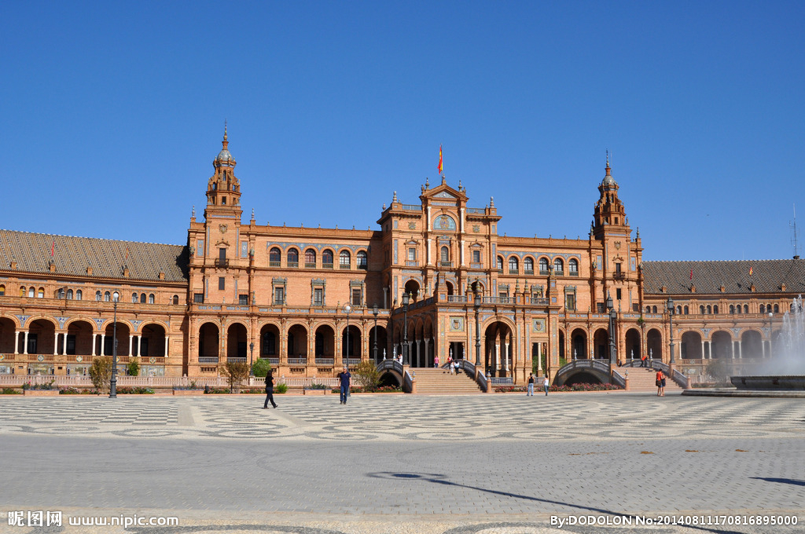
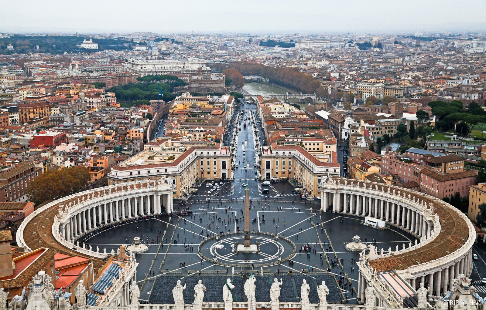
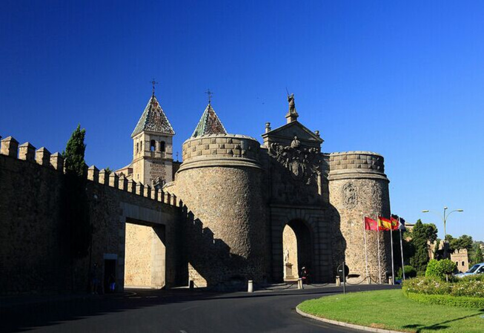
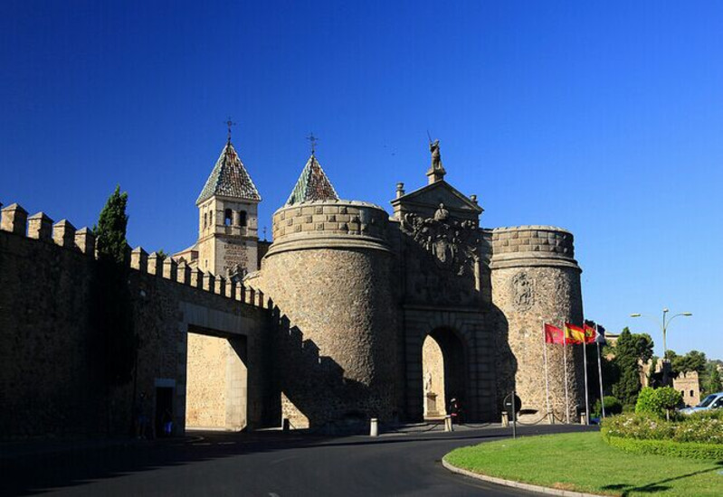
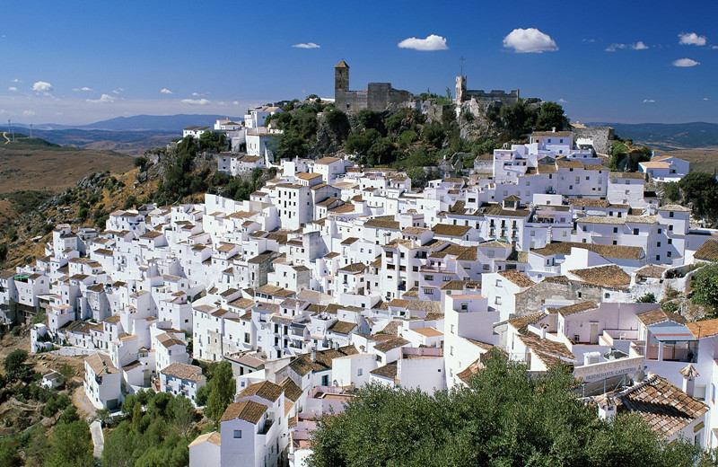
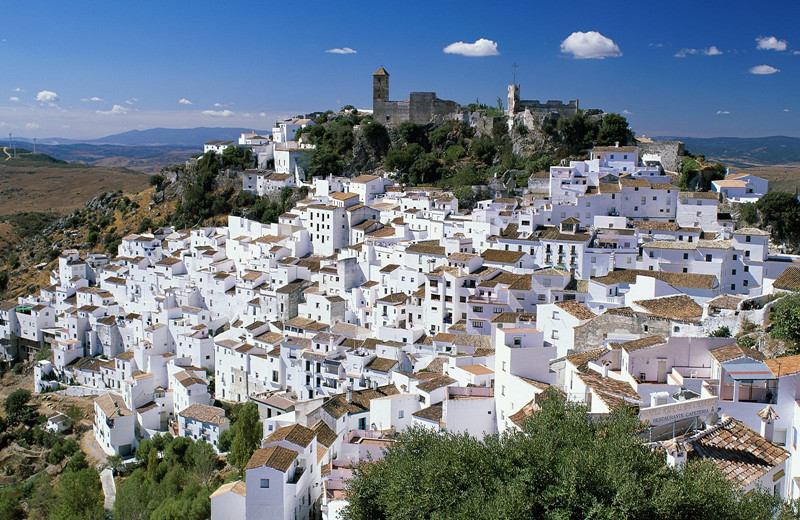
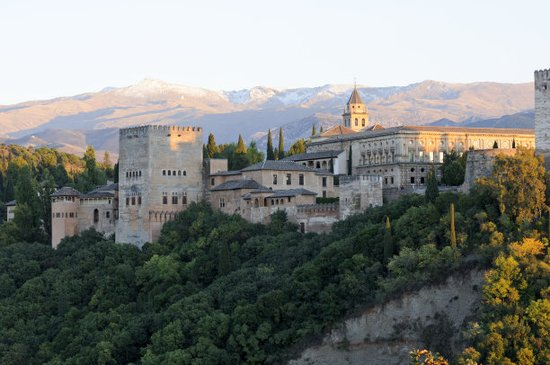
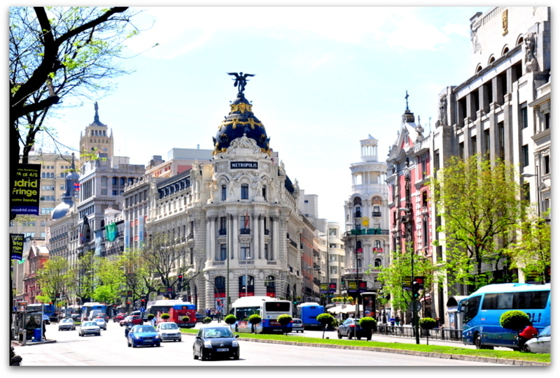

morly旅游网
一说西班牙，你肯定想到了足球，还有美丽的风景和习俗，想过去美丽的西班牙吗？
地处欧洲与非洲的交界，西邻同处于伊比利亚半岛的葡萄牙，北濒比斯开湾，东北部与法国及安道尔接壤，南隔直布罗陀海峡与非洲的摩洛哥相望，领土还包括地中海中的巴利阿里群岛，大西洋的加那利群岛及非洲的休达和梅利利亚。该国是一个多山国家，总面积505925平方公里，其海岸线长约7800公里。
西班牙自史前时代以来就一直受外来影响，中世纪时有多个国家并立，至15世纪始建立单一国家，近代史上，西班牙是一个重要的文化发源地，在文艺复兴时期是欧洲最强大的国家，于15世纪中期至16世纪末期时成为影响全球的日不落帝国，现今全球有5亿人口使用西班牙语，为世界上总使用人数第3多的语言。
西班牙是一个高度发达的资本主义国家，是欧盟和北约成员国，还是欧元区第四大经济体，国内生产总值(GDP)居欧洲国家第6名，世界排名第13。 也是世界上最大的汽车生产国之一。
马德里
西班牙首都，是欧洲著名的历史名城，市区面积为607平方公里，市区人口323.3万人，有400多年的历史，是全国的政治、文化、经济和金融中心。马德里是西班牙中央经济区的综合性经济中心，运输、物流、研发、消费和高新技术产业的中心。
 巴塞罗那
位于西班牙东北部地中海沿岸，是加泰罗尼亚自治区首府。是伊比利亚半岛的门户，全市面积91平方公里，市区人口151万，连同外围地区人口为400万，是西班牙第二大城市，也是世界上人口最稠密的城市之一。
 

塞维利亚
安达卢西亚自治区首府，人口70.2万，是全国第四大城市，南部地区第一大城市，也是西班牙唯一游内河港口的城市，西班牙南部经济、贸易、旅游和文化重镇。
 

科尔多瓦
科尔多瓦(Córdoba)是一个拥有无数文化遗产和古迹的城市。一方面由于它在瓜达尔基维尔河(River Guadalquivir)上的重要战略位置，另一方面由于曾居住在这个城市中的不同民族留下的众多遗迹，科尔多瓦成为了在西方历史的核心地带一个占据特殊位置的城市。
 西班牙主要矿产储藏量：煤88亿吨，铁19亿吨，黄铁矿5亿吨，铜400万吨，锌190万吨，汞70万吨。森林总面积1500万公顷。森林覆盖率30%，软木产量和出口量居世界第二。
西班牙全国划分为17个自治区、50个省、8000多个市镇，在摩洛哥境内另有休达和梅利利亚两块飞地。
内容整理至网络，如有侵权，请联系我们！1255394075@qq.com